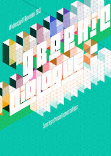

Talks about different kinds of Spatial UI and walks through a sample scene that applies these different kinds of VR interfaces. Some concepts: Diegetic UI (Spatial UI - positioned in world space) vs Non-Diegetic UI (HUD - overlaid on top of screen)
Article about User Interfaces for VR
Art by Sean Edward Whelan
Three creatives tell us why coding is crucial to contemporary design
Quotes: “As design formats continue to move far beyond a printed page and become increasingly immersive and dynamic, it’s important that we, at DIA, continue to devote ample time to learn new tools and techniques to maximise the impact design can have in these environments.” - Tools for new mediums like VR/AR are quite complicated and I agree that its important to devote time to learning them because they can provide a much more impactful experience for the viewer
“Coding has always been a crucial part of the design process at Moniker. Over the years we’ve learned that our concepts and ideas cannot be developed without playing around and making small tests with technology. Quite often this ‘fiddling around’ is what sparks the core idea for a project.” -This quote reminds me of something Hannahan might say and last semester through working on projects I discovered it to be very true.
“Coding has always been a crucial part of the design process at Moniker. Over the years we’ve learned that our concepts and ideas cannot be developed without playing around and making small tests with technology. Quite often this ‘fiddling around’ is what sparks the core idea for a project.” -This quote reminds me of something Hannahan might say and last semester through working on projects I discovered it to be very true.
Poster w/ 3D Typography by unkown artist

Visual Design Methods for Virtual Reality by Mike Alger
Lot of good concepts on building interfaces in VR
Studio DIA
Opened my eyes to the infinite different ways you can animate typography; animating form, color, position in space, rotation, scale (2D and 3D), the environment around it, texture to name a few.
HaptX Gloves
Haptic Feedback gloves that apparently feel pretty darn real. Adds touch as another entire element to virtual objects and expands on possibilities of creative experiential design for VR
Dance Tonite by Studio Moniker
Observation 1
There are endless possibilities to make games, interfaces and experiences in VR but I personally would like to experiment with making humorous, playful experiences that don’t take themselves too seriously - for right now most experiences are doing the opposite. Also experiences that push typography into new territory would be pretty cool.
Observation 2
I've been playing a game called Beat Saber which basically is like DDR in VR and it is freaking cool. I think VR music videos that immerse you in a song/story are pretty amazing and will be a big industry in the future.